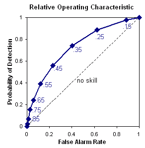

These descriptions are taken from the WWRP-WGNE
Joint Verification Working Group's verification
web site and expanded upon in some cases using extracts lifted unashamedly
from Stanski et al. (1989).
To verify this type of forecast we start with a contingency table that shows the frequency of "yes" and "no" forecasts and occurrences. The four combinations of forecasts (yes or no) and observations (yes or no), called the conditional distribution, are:
hit - event forecast to occur, and did
occur
miss - event forecast not to occur,
but did occur
false alarm - event forecast to occur,
but did not occur
correct negative - event forecast not
to occur, and did not occur
The total numbers of forecast and observed occurrences and non-occurences
are given on the lower and right sides of the contingency table, and are
called the marginal distribution.
| Forecast | ||||
| yes | no | Total | ||
| Observed | yes | hits | misses | observed yes |
| no | false alarms | correct negatives | observed no | |
| Total | forecast yes | forecast no | total |
The contingency table is a useful way to see what types of errors are being made. A perfect forecast system would produce only hits and correct negatives, and no misses or false alarms.
There are several categorical statistics that can be computed from the
yes/no contingency table. The ones used in the EPS verification are:
Measures the ratio of the frequency of forecast events to the frequency of observed events. It measures the ability to forecast events with the same frequency as found in the sample, without regard to forecast accuracy.
Range: 0 to infinity. Perfect score: 1.
Characteristics: Indicates whether the forecast system has a
tendency to underforecast (BIAS<1) or overforecast (BIAS>1)
events. Does not measure how well the forecast corresponds to the observations,
only measures relative frequencies.
Measures the fraction of observed and/or forecast events that were correctly predicted, adjusted for hits associated with random chance. This score is often used in the verification of rainfall in NWP models because its "equitability" allows scores to be compared more fairly across different regimes.
Range: -1/3 to 1, 0 indicates no skill. Perfect score: 1.
Characteristics: Sensitive to hits, penalizes both misses and
false alarms, accounts for climatological event frequency. Does not distinguish
source of forecast error.
Verification of forecasts of continuous variables measures how the
values
of the forecasts differ from the values of the observations.
Measures "average" error, weighted according to the square of the error. The root mean square error puts greater influence on large errors than smaller errors, which may be a good things if large errors are especially undesirable.
Range: 0 to infinity. Perfect score: 0.
Characteristics: Simple, familiar. Does not indicate the direction
of the deviations. Emphasis on large errors may encourage conservative
forecasting.
Measures improvement over a reference forecast. When MSE is the score used in the above expression then the resulting statistic is called the reduction of variance.
Range: minus infinity to 1, 0 indicates no improvement in skill over the reference forecast. Perfect score: 1.
Characteristics: Implies information about the value or worth of a forecast relative to an alternative (reference) forecast. Can be unstable for small sample sizes.
A good probability forecast system has several attributes:
reliability - agreement between forecast
probability and mean observed frequency; like a categorical bias
sharpness - tendency to forecast extreme
values -- "climatology" is not sharp
resolution - ability of forecast to
resolve the set of sample events into subsets with characteristically different
frequencies
 Reliability
diagram - (also called "attributes diagram").
Reliability
diagram - (also called "attributes diagram").
The reliability diagram plots the observed frequency against the forecast
probability, where the range of forecast probabilities is divided into
K
bins (for example, 0-5%, 5-15%, 15-25%, etc.). The diagonal line indicates
perfect reliability (average observed frequency equal to predicted probability
for each category), and the horizontal line represents the climatological
frequency. Sometimes sample sizes are plotted either as a histogram, or
as numbers next to the data points.
The reliability diagram is in some ways analagous to a scatter plot, where the data are stratified by the forecast into K categories (K points). The reliability diagram thus represents stratification conditioned on the forecast and can be expected to give information on the real meaning of the forecast. Reliability is indicated by the proximity of the plotted curve to the diagonal. The deviation from the diagonal gives the conditional bias. If the curve lies below the line, this indicates overforecasting (probabilities too high); points above the line indicate underforecasting (probabilities too low).
Sharpness may be inferred from the distribution of sample sizes in the probability categories. The sharper the forecast, the more precise the forecasts are and the greater the sample sizes in the extreme categories near 0% and 100%. Conservative (not sharp) forecasting is indicated by large percentages of the sample occurring in the probability categories near the climatological probability. Sharpness does not guarantee a good forecast unless it is also accurate. For a given level of reliability, the sharper the forecast the more informative it will be.
Resolution indicates the ability of the forecast to separate the events from the non-events. A biased forecast may still have good resolution, which means that it may be possible to improve the forecast through calibration. The flatter the curve in the reliability diagram, the less resolution it has. A forecast of climatology does not discriminate at all between events and non-events, and thus has no resolution.
The reliability diagram is conditioned on the observations (i.e., given
that Y occurred, what was the performance of the forecast?). It it a good
partner to the ROC, which is conditioned on the forecasts.
The Brier score is the mean squared error in probability space. Murphy (1973) showed that it could be partitioned into three terms: (1) reliability, (2) resolution, and (3) uncertainty.
Range: 0 to 1. Perfect score: 0.
The Brier score is sensitive to climatological frequency of the event.
In the absence of any forecasting skill, the best strategy to optimise
the Brier score is to forecast the climatological frequency. The more rare
an event, the easier it is to get a good BS without having any real
skill. For this reason, the Brier skill score (see below) is preferred
because it references the score to climatology (sample or long-term).
Measures the improvement of the probabilistic forecast relative to a reference forecast (usually the long-term or sample climatology)
Range: minus infinity to 1, 0 indicates no skill when compared to the reference forecast. Perfect score: 1.
Characteristics: Takes climatological frequency into account.
Because the denominator approaches 0 for a perfect forecast, this score
can be unstable when applied to small data sets. This score should always
be applied to a sufficiently large sample, one for which the sample climatology
of the event is representative of the long term climatology. The rarer
the event, the larger the number of samples needed to stablise the score.
For best results the Brier skill score should be computed on the whole
sample, i.e., the skill should be computed for an aggregated sample, not
averaged for several samples.
Relative operating characteristic - Plot probability of detection vs false alarm rate (false alarms / observed no, also known as probability of false detection), using a set of increasing probability thresholds (for example, 0.05, 0.15, 0.25, etc.) to make the yes/no decision. The area under the ROC curve is frequently used as a score.
ROC measures the ability of the forecast to discriminate between two alternative outcomes.
Range: 0 to 1, 0.5 indicates no skill. Perfect score: 1
Characteristics: A good ROC is indicated by a curve that goes close to the upper left corner (low false alarm rate, high probability of detection). It is not sensitive to bias in the forecast, so says nothing about reliability. The ROC is conditioned on the forecasts (i.e., given a forecast of X, what was the resulting performance?) It allows the cost of false alarms to be assessed, but does not deal with missed events. It it a good partner to the reliability diagram, which is conditioned on the observations.
Ranked probability score - 
where M is the number of forecast categories,
pk
is the predicted probability in forecast category k, and ok
is an indicator (0=no, 1=yes) for the observation in category k.
Measures the sum of squared differences in cumulative probability space for a multi-category probabilistic forecast.
Range: 0 to 1. Perfect score: 0.
Characteristics: The RPS penalizes forecasts less severely when their probabilities are close to the true outcome, and more severely when their probabilities are further from the actual outcome. For two forecast categories the RPS is the same as the Brier Score.
Ranked probability skill score -
Measures the improvement of the multi-category probabilistic forecast relative to a reference forecast (usually the long-term or sample climatology)
Range: minus infinity to 1, 0 indicates no skill when compared to the reference forecast. Perfect score: 1.
Characteristics: The RPSS is similar to that for the 2-category
Brier skill score, i.e., it takes climatological frequency into account.
Because the denominator approaches 0 for a perfect forecast, this score
can be unstable when applied to small data sets. This score should always
be applied to a sufficiently large sample, one for which the sample climatology
of the event is representative of the long term climatology. The rarer
the event, the larger the number of samples needed to stablise the score.
For best results the Brier skill score should be computed on the whole
sample, i.e., the skill should be computed for an aggregated sample, not
averaged for several samples.
Rank histogram (Hamill,
2001)
Also known as a "Talagrand diagram", this method checks where the verifying observation usually falls with respect to the ensemble forecast data, which is arranged in increasing order at each grid point. In an ensemble with perfect spread, each member represents an equally likely scenario, so the observation is equally likely to fall between any two members.
To construct a rank histogram, do the following:
1. At every observation (or analysis) point rank the N ensemble
members from lowest to highest. This represents N+1 possible bins that
the observation could fit into, including the two extremes
2. Identify which bin the observation falls into at each point
3. Tally over many observations to create a histogram of rank.
Interpretation:
Flat - ensemble spread about right to represent forecast uncertainty
U-shaped - ensemble spread too small, many observations falling outside
the extremes of the ensemble
Dome-shaped - ensemble spread too large, most observations falling
near the center of the ensemble
Asymmetric - ensemble contains bias
Note: A flat rank histogram does not necessarily indicate a good forecast, it only measures whether the observed probability distribution is well represented by the ensemble.
Beth Ebert, BMRC Weather Forecasting Group, June 2003
 where
where